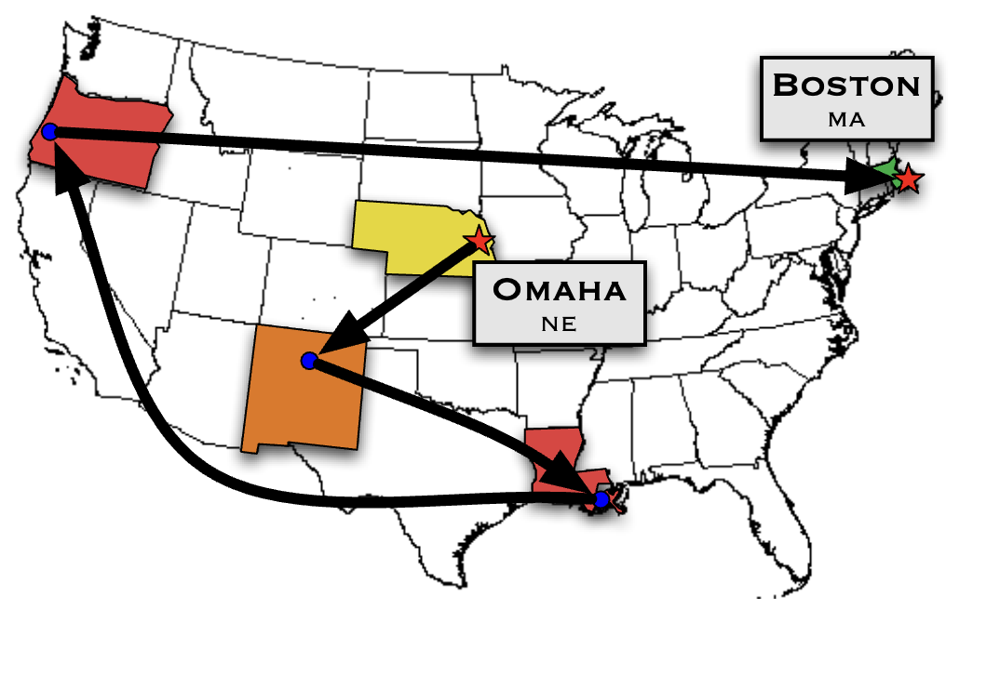

Six Handshakes to a Stranger
The big question of this module. Why is a stranger on the other side of the world only about six handshakes away?
Eight billion people, and any two of them turn out to be separated by a handful of introductions. That is a strange thing for a network to be, and the strangeness is the whole point. Your friends mostly know each other, which should seal you inside a small pocket of the world — and yet the world is not small in that sense. It is small in the sense of close.
This module measures both halves of that sentence, shows why they pull against each other, and gives one mechanism that produces them together. We reuse the vocabulary from Module 1 — walk, path, connected component — and add three new quantities: average path length, the clustering coefficient, and the small-world index that judges them against a random network.
Sixty-Four Letters That Found a Stockbroker
Stanley Milgram (1933-1984) was an American social psychologist best known for his controversial obedience experiments at Yale University in the early 1960s. Beyond the obedience studies, Milgram conducted groundbreaking research on social networks, including the famous “small world” experiment that revealed the surprisingly short chains connecting any two people in society.
How far apart are two people in a social network? Milgram and his colleagues ran a series of experiments in the 1960s to find out, and Figure 1 sketches how the best-known of them worked.

The experiment went as follows:
- The researchers mailed a packet to 296 people, most of them in Omaha, Nebraska, and the rest in Boston.
- The recipient was asked to send the packet straight to the target person — a stockbroker working in Boston — if they knew him personally. If not, they were to forward it to someone they knew on a first-name basis who might be closer to him.
- Each new recipient did the same, until the packet reached the target or the chain died.
The result was surprising: 64 of the 296 packets reached the stockbroker, and those completed chains had passed through 5.2 intermediaries on average — the figure that became known as six degrees of separation (Travers and Milgram, Sociometry, 1969). Despite the hundreds of millions of people in the United States, two randomly chosen strangers sat only a few handshakes apart.
The term “six degrees of separation” is commonly associated with Milgram’s experiment, but Milgram never used it. John Guare coined the term for his 1991 play and film “Six Degrees of Separation.”
Notice what the experiment actually shows. It is not merely that a short chain exists between two strangers — it is that ordinary people, each seeing only their own acquaintances, can find one. That is a much stronger claim, and it is the one we will put you inside of a few paragraphs from now.
Later studies confirmed the effect at a scale Milgram could not reach:
An email version of the experiment recruited more than 24,000 chains aimed at 18 targets in 13 countries. Only 384 chains completed, but among those the average length was about four steps; correcting for the chains that simply died, the researchers estimated the true typical distance at five to seven (Dodds, Muhamad and Watts, Science, 2003; re-analysed in Goel et al. (2009)).
Researchers at Facebook and the University of Milan measured the whole Facebook social network — 721 million active users and 69 billion friendships. The average distance between two users was 4.74. (Backstrom et al. 2012)
Clustered and Yet Close: Two Things That Should Not Coexist
When we think about social networks, it is natural to imagine that most people are friends with others who are nearby — friends of friends, classmates, colleagues, neighbors. These are local connections, and they tend to form tightly-knit groups where everyone knows each other. In network terms, this means there are many triangles: if Alice is friends with Bob, and Bob is friends with Carol, then Alice is also likely to be friends with Carol.
However, if a network had only these local, clustered connections, it would be hard for information or influence to travel across it. You would have to pass through many intermediaries to reach someone on the far side, so the typical distance between two nodes would be large, not six.
What makes small-world networks surprising is that, despite all that local clustering, they also contain a few long-range connections — edges that link distant parts of the network. These shortcuts collapse the typical distance. As a result, even in a huge network, you can reach almost anyone in a few steps. This combination of high clustering and short paths is what defines the small-world property.
In summary:
- Local connections create clustering (many triangles), but on their own they make the network “large” in terms of path length.
- Small-world networks have both high clustering and short average path lengths, thanks to a few edges that connect distant parts of the network.
- This is non-trivial because it cannot be explained by local connections alone; the long-range links are essential.
Try It Yourself: Race Across Wikipedia in Five Clicks
Before we measure anything, feel it. Play a round of Wikirace: you are given a start article and a target article, and you must get from one to the other using only the links inside the pages. No search box.
You will almost certainly arrive in fewer than ten clicks, and — this is the part worth noticing — you will do it without ever seeing a map of Wikipedia. You route by local knowledge alone, exactly as Milgram’s letter carriers did. Keep count of your clicks; that number is the quantity we are about to define.
Putting a Number on “Small”
Two quantities carry the whole story, so we define them precisely and compute each one by hand on a network small enough to check.
Distance and Average Path Length
The distance d(i,j) between two nodes is the number of edges on a shortest path between them. If no path exists at all, the distance is infinite.
Recall from Module 1 that a path is a walk that never revisits a node. A shortest path between two nodes is one with the fewest edges; there may be several, but they all have the same length.
In Figure 2, let us find the distance between A and D:
- Path 1: A \rightarrow B \rightarrow D (2 edges)
- Path 2: A \rightarrow C \rightarrow D (2 edges)
- Path 3: A \rightarrow C \rightarrow B \rightarrow D (3 edges)
There are several paths, but the shortest ones have 2 edges, so d(A,D) = 2.
Now average over every pair. Four nodes give \binom{4}{2} = 6 pairs:
| Pair | Shortest Path | Length |
|---|---|---|
| A - B | A \rightarrow B | 1 |
| A - C | A \rightarrow C | 1 |
| A - D | A \rightarrow B \rightarrow D or A \rightarrow C \rightarrow D | 2 |
| B - C | B \rightarrow C | 1 |
| B - D | B \rightarrow D | 1 |
| C - D | C \rightarrow D | 1 |
The average path length \overline{L} is the mean of these distances:
\overline{L} = \frac{1}{\binom{n}{2}} \sum_{i < j} d(i,j) = \frac{1+1+2+1+1+1}{6} = \frac{7}{6} \simeq 1.17
where n is the number of nodes, so \binom{n}{2} is how many pairs there are to average over.
The diameter is a different summary of the same table: the largest entry rather than the average. Here it is 2. Average path length is the typical case; diameter is the worst case. The rest of this module works with the average, so whenever you read “the world is six steps wide”, it is an average, not a guarantee.
Counting Triangles: Three Ways to Measure Clustering
In social networks your friends tend to know each other. If you have a friend Alice, and Alice has friends Bob and Carol, clustering asks: “Are Bob and Carol also friends?” High clustering means dense local neighborhoods.
There are three standard ways to turn that question into a number, and they are not interchangeable:
- Local clustering C_i — one number per node: what fraction of node i’s pairs of friends are themselves friends.
- Average local clustering \overline{C} — the plain average of C_i over all nodes. Every node counts once, so a person with two friends counts as much as a person with two hundred.
- Global clustering C — one ratio for the whole network: triangles over connected triplets. Because a node with k friends supplies \binom{k}{2} triplets, high-degree nodes dominate this one.
We take them one at a time, and then compute all three on the same six-node network so you can see them disagree.
Local Clustering
Local clustering asks: of all the pairs of friends you have, what fraction of those pairs are friends with each other?
C_i = \dfrac{\text{\# of edges among the neighbors of } i}{\text{\# of pairs of neighbors of } i} = \dfrac{e_i}{k_i(k_i-1)/2}
where k_i is the degree of node i and e_i is the number of edges running between i’s neighbors. Every such edge closes a triangle with i, so you may equally read the numerator as “triangles containing i” — the two counts are the same number.
A node with fewer than two neighbors has no pairs to check at all. By convention we set C_i = 0 for those nodes.
Take node A in Figure 3. It has k_A = 5 neighbors (B, C, D, E, F), so there are 5 \times 4 / 2 = 10 pairs of them. Of those ten pairs, exactly two are joined by an edge: B-F and C-E. So
C_A = \frac{2}{10} = 0.2 .
Average Local Clustering
Average local clustering is the mean of C_i over every node:
\overline {C} = \frac{1}{N} \sum_{i=1}^N C_i
Run through Figure 3 node by node. B’s two neighbors are A and F, and A-F is an edge, so C_B = 1. The same holds for C, E and F. Node D has a single neighbor, so C_D = 0 by our convention. With C_A = 0.2:
\overline{C} = \frac{0.2 + 1 + 1 + 0 + 1 + 1}{6} = \frac{4.2}{6} = 0.70 .
Global Clustering
Global clustering, also known as transitivity, asks the same question of the network as a whole: across every place where two edges meet, how often is the triangle closed?
A connected triplet is a set of three nodes joined by at least two edges. It is either a closed triplet (a triangle) or an open triplet (a wedge):
The global clustering coefficient is
C = \frac{3 \times \text{number of triangles}}{\text{number of connected triplets}}
Why the factor of three? A connected triplet is pinned down by its center — the node in the middle, the one incident to both edges. A triangle contains three connected triplets, one centered at each of its three nodes. Multiplying the triangle count by three therefore puts the numerator into the same units as the denominator.
Counting triplets is easiest center by center: a node of degree k is the center of \binom{k}{2} of them. In Figure 3, A contributes \binom{5}{2} = 10, each of B, C, E and F has degree 2 and so contributes 1, and D has degree 1 and contributes none — 14 connected triplets in total. There are 2 triangles (A-B-F and A-C-E), so
C = \frac{3 \times 2}{14} = 0.43 .
ImportantSame network, two answers: 0.70 and 0.43
Both numbers are correct; they weight the network differently.
Average local clustering gave 0.70 because five of the six nodes are tiny — they have exactly two neighbors, and those two happen to be connected, so each scores a perfect 1. The hub A, whose neighborhood is almost empty, is outvoted five to one.
Global clustering gave 0.43 because A alone supplies 10 of the network’s 14 triplets, and only 2 of them are closed. The hub dominates.
The rule of thumb: average local clustering describes the typical node; global clustering describes the typical triplet. In networks with hubs the two can differ by a lot, and reporting one while calling it “the clustering coefficient” is how papers end up incomparable.
Compared to What? The Random Baseline
We now have both ingredients — \overline{L} and \overline{C}. The obvious move is to combine them into a single score. A small world has high clustering and short paths, so take the ratio:
s_{\text{naive}} = \frac{\overline{C}}{\overline{L}}
This does not work, and the reason is instructive. Clustering is at most 1, and average path length is at least 1, so s_{\text{naive}} \le 1 always. The maximum is reached by a complete network, where everyone knows everyone: \overline{C} = 1, \overline{L} = 1, and s_{\text{naive}} = 1. The score is maximized by the single least interesting network there is. Raw values of \overline{C} and \overline{L} cannot certify small-worldness, because there is nothing in them to say whether 0.43 is a lot of clustering or a little.
A lot compared to what? To a network with the same size and the same number of edges but no structure at all. Humphries and Gurney turned that comparison into the small-world index (Humphries and Gurney 2008):
\sigma = \frac{\overline{C}/\overline{C}_{\text{random}}}{\overline{L}/\overline{L}_{\text{random}}} = \frac{\overline{C} \cdot \overline{L}_{\text{random}}}{\overline{L} \cdot \overline{C}_{\text{random}}}
where \overline{C}_{\text{random}} and \overline{L}_{\text{random}} come from an equivalent random network — an Erdős–Rényi graph with the same number of nodes and the same number of edges, in which every pair of nodes is joined independently with probability p.
Watts and Strogatz (Watts and Strogatz 1998) compared \overline{C} and \overline{L} against a random graph in 1998, but the single ratio \sigma and the name “small-world-ness” are due to Humphries and Gurney in 2008.
Reading \sigma:
- \sigma > 1: small-world — more clustered than random without paying for it in distance.
- \sigma \approx 1: indistinguishable from a random network.
- \sigma < 1: anti-small-world — long paths, little clustering, worse than random on both counts.
You could get the two reference values by generating a thousand random networks and averaging. You do not have to. For an Erdős–Rényi graph they are known in closed form:
\begin{aligned} \overline{C}_{\text{random}} & \approx \frac{\langle k \rangle}{n-1} \\ \overline{L}_{\text{random}} &\approx \frac{\ln n }{\ln \langle k \rangle} \end{aligned}
where n is the number of nodes and \langle k \rangle the average degree (Humphries and Gurney 2008; Newman et al. 2001). Both results are derived in the appendix.
TipWorked example: is this network a small world?
Suppose you measure a network of n = 1{,}000 nodes with average degree \langle k \rangle = 10, and find \overline{C} = 0.30 and \overline{L} = 4.5.
The random baseline is \overline{C}_{\text{random}} \approx 10/999 = 0.010 and \overline{L}_{\text{random}} \approx \ln 1000 / \ln 10 = 6.91/2.30 = 3.0.
\sigma = \frac{0.30/0.010}{4.5/3.0} = \frac{30}{1.5} = 20 .
Thirty times the clustering of a random graph, for only one and a half times the distance. Comfortably a small world.
Notice what the baseline reveals: short paths come free in a random network — \ln 1000 / \ln 10 = 3 steps across a thousand nodes. High clustering does not. So the surprising half of the small-world property was never the short paths. It was having them and keeping the triangles.
How to Build a Small World from Scratch
Real networks turn out to be small worlds again and again. That raises the question of mechanism: what process would produce a network like this? Watts and Strogatz answered it with a model you can run on a napkin — start with something maximally clustered, then add a dial that introduces randomness.
“What I cannot create, I do not understand.” — Richard Feynman
Which is exactly why a model matters here: building a network that has the small-world property is how we learn what causes it.
Step 1: Start with a ring lattice.
- Arrange N nodes in a ring.
- Give every node degree k (choose k even) by connecting it to its k nearest neighbors around the ring — k/2 on each side.
- This is maximally parochial: clustering is high, and the average path length is roughly N/(2k), which grows linearly with N.
Every neighborhood on the ring is a copy of every other, so counting around a single node settles the whole network. Doing that count gives a closed form for the clustering:
C_{\text{lattice}}(k) = \frac{3(k-2)}{4(k-1)}
Note what is not in it: N. A ring of twelve and a ring of a million have the same clustering as long as each person has the same k friends. That is the asymmetry the model turns on — clustering is capped by k and blind to size, while N/(2k) grows without bound. For k = 2 the formula gives 0 (your two neighbors are two steps apart and never adjacent), k = 4 gives 0.5, and k = 10 gives 0.667 — the “about 0.67” quoted in the next paragraph.
Step 2: Rewire each edge with probability p.
- Visit every edge in turn. With probability p, detach one endpoint and reconnect it to a node chosen uniformly at random; with probability 1-p, leave it alone.
- Do not create self-loops or duplicate edges.
The parameter p is the dial. At p = 0 you have the lattice: high clustering, long paths. At p = 1 every edge has been rewired and you have something indistinguishable from an Erdős–Rényi random graph: short paths, almost no clustering. The interesting question is what happens in between — and the answer is that the two properties do not fade at the same rate.
Take the case from the original paper: N = 1{,}000 nodes and k = 10, so 5,000 edges, an average path length of about 50 and a clustering coefficient of about 0.67. Now set p = 0.01 — roughly 50 edges moved out of 5,000, one percent of the network. The average path length falls to about a fifth of its lattice value, while the clustering is still within a couple of percent of its own (Watts and Strogatz 1998). Fifty shortcuts buy you the whole small-world effect and cost you almost none of the local structure.
You do not have to take the paper’s word for it. Below is a village of twenty you can count by hand: walk across it, move one edge, walk across it again, and then turn the dial yourself.
This is the mechanism. A small number of long-range connections is enough to make a network globally close while it remains locally clustered. The same explanation carries beyond social networks: neurons are wired mostly to their neighbors but a few axons cross the brain, and the Internet is mostly regional with a few links that span continents.
What You Can Now Do
- Compute the distance between two nodes, the average path length, and the diameter of a small network by hand.
- Compute local, average local and global clustering, and say which of the last two is larger and why.
- Explain why the raw ratio \overline{C}/\overline{L} cannot certify a small world, and normalize against a random baseline instead.
- Build a Watts-Strogatz network and predict what turning p will do to clustering and to path length.
Next: measure all of this in code on networks where you already know the answer, then work the exercises. The derivations behind the random-graph baseline are in the appendix.
References
Backstrom, Lars, Paolo Boldi, Marco Rosa, Johan Ugander, and Sebastiano Vigna. 2012. “Four Degrees of Separation.” Proceedings of the 4th Annual ACM Web Science Conference, 33–42.
Humphries, Mark D., and Kevin Gurney. 2008. “Network ‘Small-World-Ness’: A Quantitative Method for Determining Canonical Network Equivalence.” PLoS ONE 3 (4): e0002051. https://doi.org/10.1371/journal.pone.0002051.
Newman, M. E. J., S. H. Strogatz, and D. J. Watts. 2001. “Random graphs with arbitrary degree distributions and their applications.” Physical Review E 64 (2). https://doi.org/10.1103/physreve.64.026118.
Watts, Duncan J, and Steven H Strogatz. 1998. “Collective Dynamics of ‘Small-World’networks.” Nature 393 (6684): 440–42.